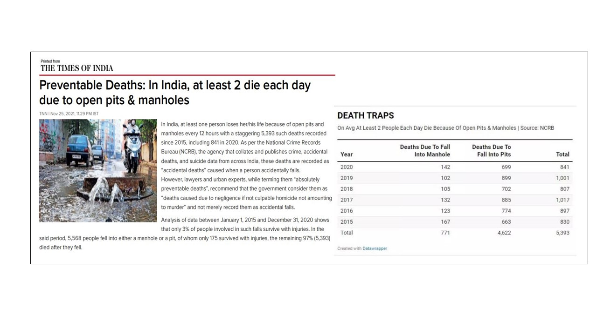
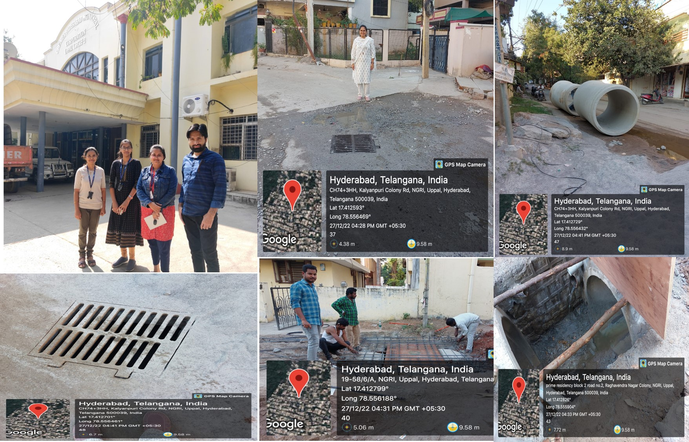

Welcome to Our website
You can use this website to know the locations and status as well as density of the manholes on a particular path/road. Try to avoid high density manhole roads in rainy season/flooded time. Drivers of heavy vehicles can also get information about the partial blockage of the roads.
Problem
A manhole or maintenance hole is an opening to a confined space such as a shaft, utility vault, or large vessel.
Irregularity related to the manhole like raised/supressed, open/broken manholes on the roads are causing the accidents and deaths in siginificant number. And also in rainy season or flooded area, blockage of mahole will cause to overflow water on roads, the invisibility of manholes can become a trap for accidents/deaths.
Statistics of Accidents
- In India, at least 2 persons die each day due to open manholes and pits.
- Death due to open manhole: 62-year-old Virar resident accidentally falls and dies in Mumbai on 7th November 2022.
- Hyderabad man who tried to warn people about manhole in Chaderghat hit by speeding car, dies on 12th July 2022.
- Motorist fell close to an open drain and got badly injured near Madina Majid in Hassan Nagar on 30th September 2021.
- Software employee(35) was killed after falling in an open drain at Manikonda on 25th September 2021.
- A man fell into 20 feet deep manhole with his two-wheeler, came out with minor injuries on 8th February 2018.
- Body of a man found in an open manhole at Gandhi Hospital, Hyderabad on 23rd September 2015.
We are presenting some statistics of manhole related accidents through out India.
As per THE TIMES OF INDIA nearly 771 deaths were reported from 2015-2020. There were reports of many more accidents which happened in the last two years.
Some accidents are shown below.
(Spots of accidents are shown in below Figure)
Our Approach
- Identification of low lying area based on the integration of Digital Elevation Model (DEM) and interactive water level.
- Field visit and data collection of manhole coordinates.
- Data sorting and adding the coordinates of manholes as a layer on Google My Maps.
- Creation of platform (website) to show the updates of the manholes (Open/Closed).
To address the above mentioned problem, the following initiative approach can be applied to reduce the accidental deaths due to manholes over all the regions (Low/high lying). For the effectiveness, we have chosen low lying area based on DEM and interactive water level, because low lying areas are more prone to flooding and most of the manholes are opened in the rainy season in the flooded areas to drain the water.


Results
The results of this project carried out includes the generation of Google My Map with location of manholes accessible to everyone through our website
Summary
About Us
We are team of five Researchers from AcSIR CSIR-NGRI. Trying to reduce the surficial manhole related accidents and problems. We will be happy to receive comments and suggestions for modification/betterment of this project.
Comments